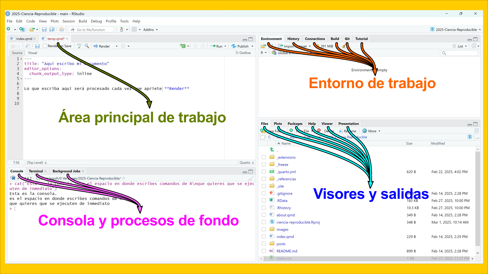
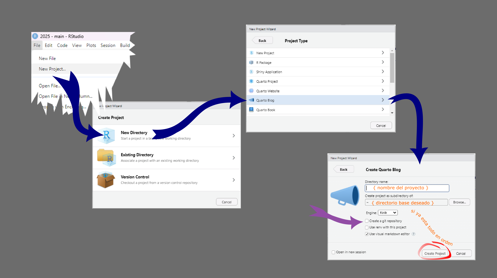
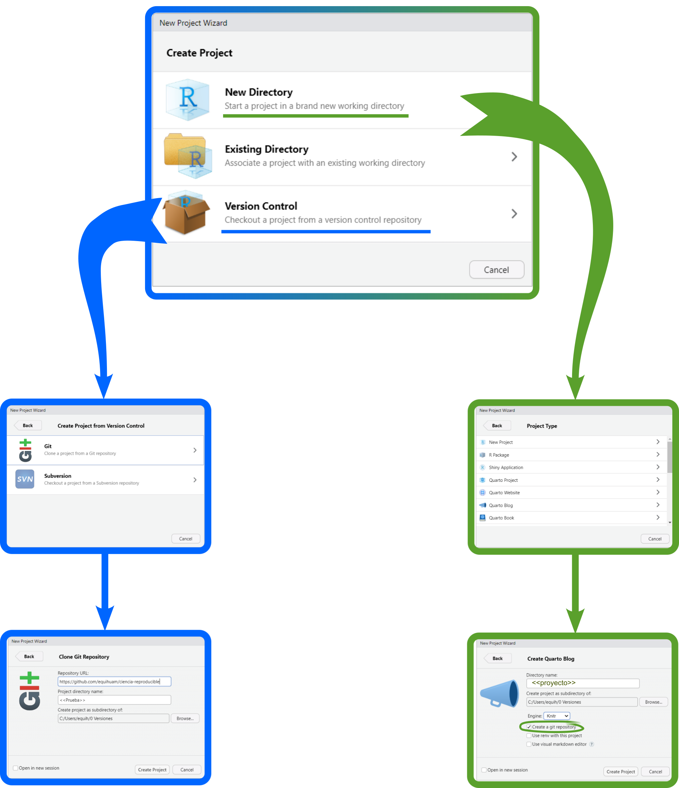
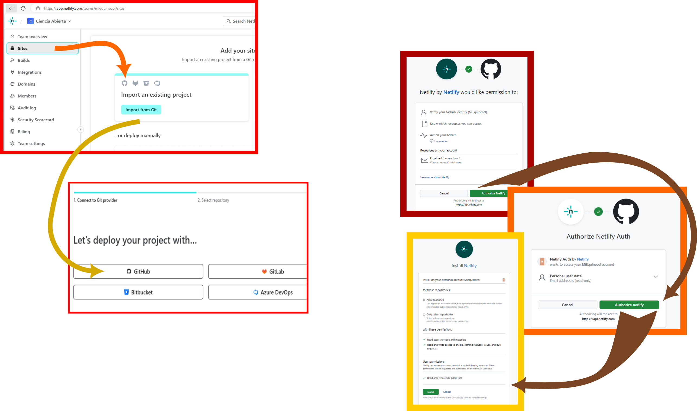
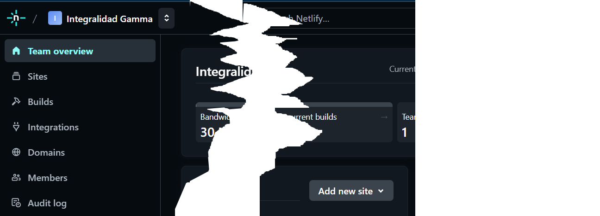
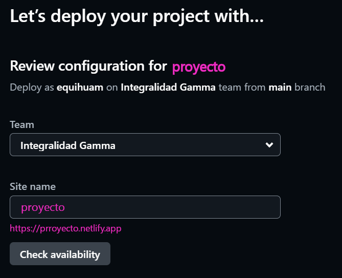
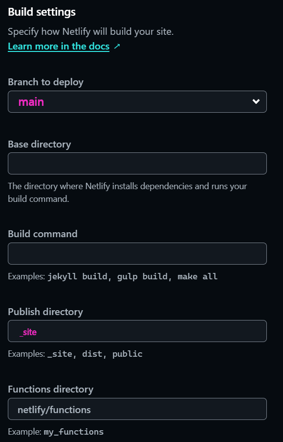
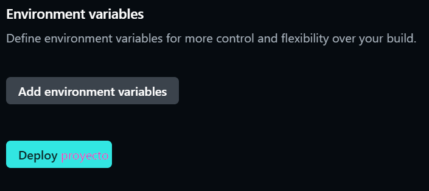

muestra el escript:
usethis::use_git()Tan simple como escribir en la página en blanco con pequeñas marcas de intención. Se ha inventado varias veces y el columpio ha ido y venido entre el interés en ver y controlar las marcas directamente sobre el texto y la preferencia de ver sólo el producto terminado WYSIWYG (lo que ves es lo que tienes, aunque el marcado existe, pero lo hace la máquina por ti).
El trabajo del científico, el ingeniero, el estudiante o el creador de contenidos transita por el proceso de escribir, almacenar y dar formato presentable a los documentos. La escritura da origen a la historia y deja atras la prehistoria. Un largo proceso de evolución cultural apasionante que tiene un hermoso recuento en el libro de Irene Vallejo El infinito en un Junco (Fig. 1). Hemos explorado las rocas, la arcilla, los pigmentos vegetales y minerales, las pieles de animales y los tejidos vegetales para escribir. Hoy lo hacemos sobre el éter y nos apoyamos en procesos electromagnéticos.
Hacer esto ha involucrado a incontables inventores y lo hacemos recurriendo a herramientas y formatos que tienen registro de propiedad a nombre de lucrativas empresas particulares. Lo hacemos así y el hecho no nos merece ni un suspiro reflexivo sobre sus implicaciones.
A veces nos incomodan detalles o grandes fallas que obstaculizan la expresividad que requiere la escritura académica creativa. En general, la práctica actual se opone a lograr un flujo ágil y transparente a lo largo del proceso completo que involucra organizar los datos, analizarlos, sintetizarlos y publicar los hallazgos obtenidos.
Por la fuerza del hábito, y a pesar de inconvenientes, la mayoría de las revistas aún insisten en recibir textos en formato docx.
En el movimiento social que nos invita a reflexionar sobre la ciencia abierta, hay quienes sostenemos que el conocimiento y el proceso creativo que lo impulsa debe ser lo más libre posible. El talento y la sabiduría su núcleo. Sobre todo en áreas como la salud y la calidad del entorno ecológico en el que vivimos.
Markdown fue desarrollado en 2004 por John Gruber (Fig. 2). Ideo una manera de poner marcas de formato en un texto cómun y corriente (lo llamaremos texto plano). También construyó un programa de cómputo (lo escribió en el lenguaje Perl), para convertir los archivos ya marcados en Markdown a algo conveniente para que las computadoras nos los pudieran presentar a través de la Web. Hacer esto implica recontruir y transforrmar el documento original a un nuevo formato, el HTML (HyperText Markup Language). Encontrarás ayuda sobre como usar Markdown en el menú de ayuda de RStudio: Help \(\rightarrow\) Markdown Quick Reference.
%20-%20By%20Randy%20Stewart,%20CC%20BY-SA%203.0,%20httpscommons.wikimedia.orgwindex.phpcurid=10682505.jpg)
He aquí uno de los grande valores que busca el movimiento en favor de una ciencia abierta: romper las barreras que limitan el acceso a los textos y a los datos. El uso de texto plano para escribir y organizar archivos de datos tienen muchas ventajas. Para empezar se pueden leer prácticamente en cualquier dispositivo, independientemente de sistema operativo e intereses comerciales de los fabricantes. Los archivos escritos así han superado la dura prueba del paso del tiempo mejor que otros tipos de archivos.
El día de hoy empezaremos a utilizar la idea del Markdown. Producirás tus primeros archivos que serán legibles como texto plano y que a la vez estarán listos para ser producidos en una variedad de presentaciones que usualmente requerimos para nuestro propio registro de actividades y para interactuar con colegas o maestros. Además, de lo que hizo en su momento Gruber, ahora existen herramientas como Pandoc, que pueden convertir archivos desde Markdown a una variedad de otros formatos que seguramente serán de tu interés en algún momento. Otro de los valores de la ciencia abierta: favorecer el reuso de los productos de información y conocimiento
Lo que haremos es:
Es un entorno integrado de desarrollo (IDE). Como tal, ofrece una estructura que permite ineractuar con distintos aspecto del proceso creativo. En la figura puedes ver lo que usualmente tienes a tu alcance en una instalación común. Esta configuración la puedes modificar según tus preferencias desde el menú View ⟹ panes. Pero probablemente al inicio te bastará con la configuración que ya tienes.

Todo listo. Anímate a escribir tus primeras líneas en un documento Quarto.
Rstudio tiene en su menu file la opción de preparar documentos en Quarto.

Ahora ya tenemos el texto en nuestras máquinas, almacenado en casa. ¿Podemos hacer algo más para asegurar esos materiales y facilitar compartirlos con quienes queramos? Te sugiero considerar git y github para eso. Podemos imaginar que el espacio de almacenamiento en tu máquina es como una parcela de siembra, cada dato tiene coordenadas de localización y así los recuperas cuando los quieres. Lo que hace git es agregar una ventana de tiempo que te permite asomarte a la historia de lo que pasó en esas ubicaciones que te interesan.

Es una aplicación diseñada por el iniciador del desarrollo de Linux, Linus Torvalds (Fig. 3). Git es un sistema eficiente confiable y distribuido de control de versiones. El control de versiones es simplemente el seguimiento y registro de los cambios que va teniendo un documento a lo largo del tiempo. El concepto distribuido se refiere a que el registro local que tengas en tu máquina o para el caso en cualquier número de máquinas, es un registro completo, clonado del proyecto. Estos repositorios locales plenamente funcionales permiten trabajar aún cuando no tengas acceso a Internet. Los autores realizan y registran su trabajo localmente y, cuando lo encuentren conveniente, sincronizan la copia local del repositorio con la del servidor. En la actualidad Git se ha convertido en el estándar mundial de facto para el control de versiones.

Para activar git en tu proyecto tienes dos opciones:
usethis.Con este comando creas lo necesario para usar git en tu proyecto.
usethis::use_git()En cualquier caso, ahora conviene verificar como está configurado el espacio de trabajo. En la ventana de consola puedes escribir los siguientes comandos para averiguar detalles de tu configuración.
Esto te dirá como se llama la ventana de tiempo que has elegido definir como base de trabajo, puedes tener tantas ramas distintas como consideres, pero conviene que una sea la principal. Se solía llamar a esta rama master, pero ahora se ha considerado que la !esclavitud ya ha sido abolida!, así que hay una tendencia a mejor llamarle main. En realidad puedes llamarla como quieras.
usethis::git_default_branch()Si quieres configurar tu instalación de RStudio para que siempre defina la rama base como main, puedes usar elsiguiente comando. Aunque esto sólo actuará para futuros proyectos, no cambiará nada en los que tienes ya creados hasta este momento.
usethis::git_default_branch_configure(name = "main")Si lo que quieres es modificar la rama principal del proyecto con el que estas trabajando y que ya tienes abierto, este es el comando que te ayudará. En este ejemplo uso lo que es ya práctica común, migrar de master a main, pero puedes tomar tus propias preferencias sin ningún problema, aunque obviamente la parte from debe ser la existente que deseas modificar.
usethis::git_default_branch_rename(from = "master", to = "main")No todos los archivos que están en el espacio de trabajo son realmente de interés como para seguir su historia en el tiempo y podría haber también cosas que nunca deberían estar registradas en un sistema que te expone al acceso público generalizado: claves personales, tokens, identificadores de archivos privados, etc. Aunque ante esto no hay mejor cosa que ser prudente y estar atentos, existe la función vacunar que busca ayudarte a evitar estos problemas. Para activar esta ayuda en tu proyecto puedes usar este comando.
usethis::git_vaccinate()Esto pone ya en operación las capacidades de git en tu máquina. Para usarlas debes dirigirte a la pestaña respectiva. Con la función Commit generas el registro del estado de los archivos del proyecto al momento de activar el comando. Para operar esto debes decidir que archivos enviar al registro histórico, marcados como staged. Al apretar el botón Commit aparecerá una ventana en donde se reportan los detalles de lo que estas registrando. Cada Commit requiere anotar un mensaje descriptivo breve de lo que contiene el “corte”. Una vez que está todo resuelto, hay que apretar el botón Commit en esa pantalla y esperar algunos segundos a que termine el proceso de registro en la base de datos respectiva.
Ahora estas preparada o preparado para enviar tu trabajo a la nube, lo haremos con el servicio de Github, aunque hay varias opciones (como gitlab por ejemplo).
Nuevamente nos ayudará usethispara hacer esto. Lo primero es que para comunicar RStudio con Github necesitas registrar un token de ese servicio en tu equipo. El comando para esto es:
usethis::create_github_token()Esto te lleva a la página de Github en la que hay que generar el token. Hay que responder las preguntas que te haga la página, aunque todo estará prellenado con lo normalmente necesario. Cuando esté a tu gusto, aprieta el botón respectivo. Aparecerá una nueva pantalla con el token que habrá que copiar al portapapeles (ctr-c en Windows). Este token que aparece, es la única vez que lo verás, por lo que conviene copiarlo al portapapeles de tu máquina (ctrl-c en windows) y tenerlo a buen resguardo por lo pronto. En seguida hay que ejecutar este otro comando en la consola de RStudio
gitcreds::gitcreds_set()Si es la primeta vez que registras un token te pedirá que lo registres, dale paste (ctrl-v en Windows). Si ya tienes un registro dado de alta, te informará sobre lo que tiene anotado y te dará oportunidad de decidir qué quieres hacer en seguida.
Todo está ya preparado, sólo falta poner en uso el vínculo que acabamos de crear. Para eso bastará con decir:
usethis::use_github()Por cierto, este es el comando qe necesitarán en lo sucesivo para vincular cualquier nuevo proyecto a tt centta ed Github, siempre y cuando tu token este vigente.
Una vez teminadas estas tarea puedes ir a la pestaña git cuando lo consideres conveniente y ordenar a RStudio que envié todos los commits que están pendientes hasta el momento a Github. Para hacerlo deberás apretar el botón Push. Antes de hacerlo siempre es conveniente pedirle a git que se ponga al día con lo que ya está registrado en la nube, esto lo logras con el botón pull. Esto nos lleva a una rutina de operación con git que se resume en la figura siguiente.

Claro está que configurar todo la primera vez es un poco complicado, pero si todo está listo: git instalado, cuenta de Github, token activado, etc. la operación cotidiana es mucho más sencilla.
En la figura se ilustran las dos rutas para hacerlo en RStudio.

Evidentemete, si seguiste la ruta azul, tu repositorio ya existe en Github, una vez qe hayas clonado el repositorio en t máquina todo queda listo para concentrarte en escriibir. Si optaste por la ruta verde, entonces deberás crear un nuevo repositorio en Github. Para hacerlo Utiliza usethis en la pestaña de consola.
usethis::use_github()Eso es todo.
Hay que indicarle a Github que de acceso a Netlify para que tome continuamente lo necesario. La meta es que construya un sitio Web con tu contenido y lo publique en Internet. Los pasos que hay que seguir para esta primera interacción son los siguiente.
Iniciar la vinculación con Github seleccionando la opción que ofrece importar los documentos desde un repo Git. Esto dará la opción de utilizar Github como origen de datos, entre otras posibilidades.

El Siguiente paso es autorizar a Netlify a acceder a Github a través de tu cuenta, así como los específicos del repositorio que te interesa vincular. Esto también implica instalar una aplicación de vínculo entre Netlify y Github dentro de tu cuenta.
Si todo ocurrió sin problemas, tendrás ahora en Github, en el menú de aplicaciones (Avatar→ Settings→ Applications), un botón que te permitirá configurar el vínculo con Netlify según tus requerimientos. También podrás ver los repos que hayas autorizado desde Netlify.
En Netlify:


Cuando aprietas el boton de añadir sitio, aparecerá una nueva pantalla que tiene tres secciones. Se trata de los atributos que tendrás que proporcionar para darle presencia en Internet a tu proyecto y algunos otros atributos que definen como se producirá y actualizará continuamente. Estas operaciones es poco probable que las vuelvas a ver, una vez que tu proyecto esté en producción, aunque desde luego estarán siempre ahí por si deseas hacer ajustes.
Deberás elegir un nombre que se convertirá en una URL para acceder a tu proyecto. Puede ser cualquier cosa que desees, pero debe ser único. En esta sección puedes escribir nombres y verificar que estén disponibles

Es una colección de atributos para indicarle a Netlify dónde conseguir los documentos y como manejarlos. En nuestro caso, muy simple, básicamente hay que decirle en donde están los documentos que Quarto, con ayuda de pandoc, ha renderizado. Si no has cambiado nada en _quarto.yml la rama que estamos usando aquí para que Git los registre es main y, en ella el directorio de producción se llama **_site**. Por favor verifica el contenido de esto para ayudarte a comprender mejor lo que estás haciendo.

En nuestro caso no hay más que hacer, Netlify tiene información suficiente para encargarse de publicar tu proyecto continuamente. Incorporará los cambios que hagas en RStudio en la rama principal. Lo hará automáticamente cada vez que envíes tus cambios a Github.

Si todo salió bien, en este momento ya debe estar tu proyecto publicado y accesible para cualquier lector del mundo que lo localice y se interese en su contenido.
Ahora, sólo queda crear el contenido del Blog. Recuerda usar un directorio para cada nueva contribución dentro de la carpeta posts. Te sugiero usar un esquema fecha-tema para llamar esos archivos. Evita usar espacios y caracteres latinos en los temas. Para trabajar hay que crear un archivo index.qmd. Puedes hacerlo desde el menú: File $ $ New Quarto document….
Configura el encabezado de control con algo así como:
---
title: "Descriptivo del contenido"
author: "Tu Nombre y el de los autores involucrados"
lang: es
date: {{la fecha de publicación}}
categories: [colección de frases clave separadas por comas]
image: "archivo de la imágen que deseas incluir como portada"
code-fold: true
code-summary: "muestra el escript:"
fig-cap-location: top
---Si es de tu interés, aquí encontrarás muchos detalles interesanes sobre YAML.
Ciencia Abierta - Los primeros pasos Ciencia Abierta - Los primeros pasos Ciencia Abierta - Los primeros pasos Ciencia Abierta